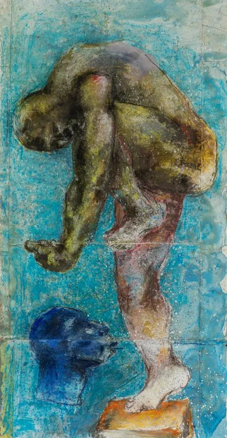

Les œuvres de Sadikou Oukpedjo semblent habitées d’une puissance magique. Elles semblent parfois nous avoir été révélées d’un temps immémorial, comme excavées d’un lieu préservé par le passage du temps. Les doux colosses des œuvres de Sadikou Oukpedjo sont montrés tantôt dans des postures introspectives, en retrait de l’agitation du monde, tantôt dans des scènes de luttes ou de confrontation. Les oeuvres de Sadikou Oukpedjo nous emportent dans un ailleurs temporel et matériel, leur support quasiminéral nous faisant entrer dans le champ de la sculpture et accéder à un imaginaire de peintures rupestres millénaires.
Ses figures thérianthropes, mi-humaines mi-animales, s’inscrivent dans une longue série de mythes et de croyances, allant des divinités égyptiennes aux rites chamaniques. D’une manière qui n’est pas sans évoquer les mythologies grecques ou africaines, les oeuvres de Sadikou Oukpedjo présentent des héros et leurs épopées, créatures parfois fantastiques, intermédiaires entre les dieux et les hommes, comme un système imagé d’explication de nos sociétés et de l’origine de nos cités.
Ses représentations sont chargées ou traversées par l’invisible et sa puissance, par l’inconnu et le caché. L’homme analyse le monde, modèle la nature, cherche à connaître les secrets dont il pourra user. Il est magicien, maître, illusionniste, savant, quand l’essence de la vie inévitablement se métamorphose et transcende le monde des idées.
Les pastels sur papier, les sculptures monumentales en extérieur, les grandes toiles, les gravures, les céramiques et les pierres taillées reflètent un état intérieur, dans le silence tortueux de l’entre soi-même. Cette étude morphologique, anatomique a trait au spirituel. La créature que Sadikou Oukpedjo fait exister dans ses œuvres constitue une archive de la conscience humaine traversée par la question de son origine primaire, pour tendre vers un devenir incertain.
Expositions à la galerie